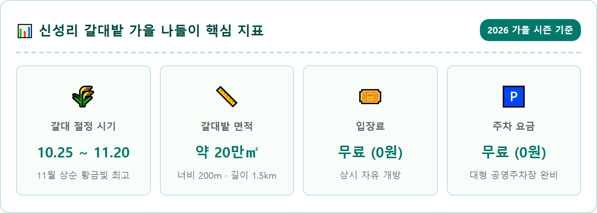
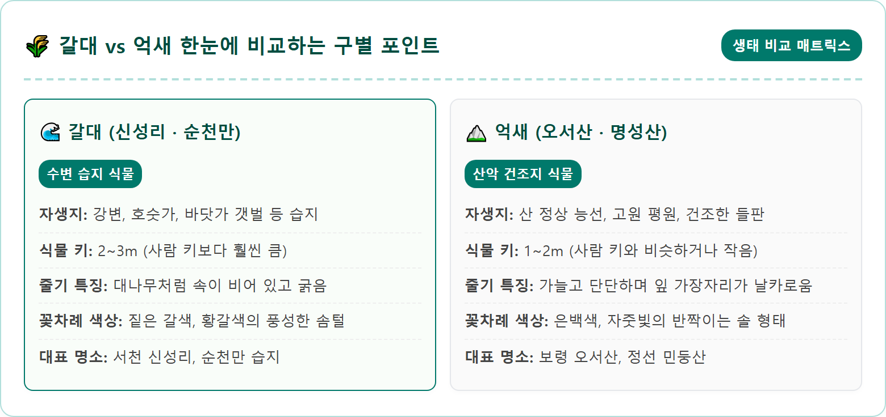
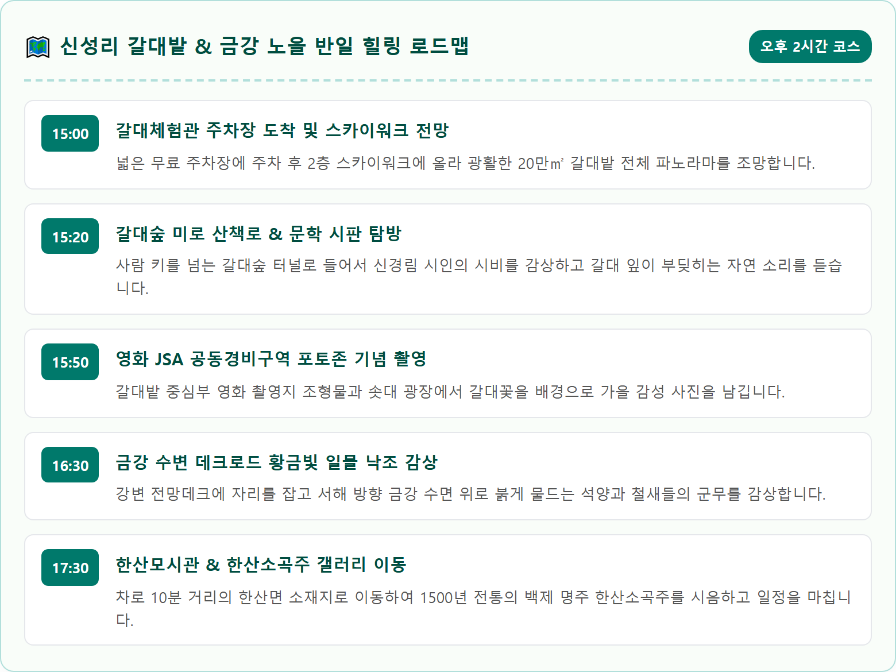
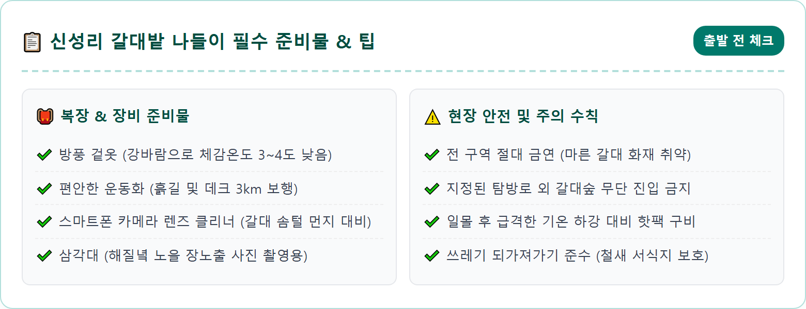
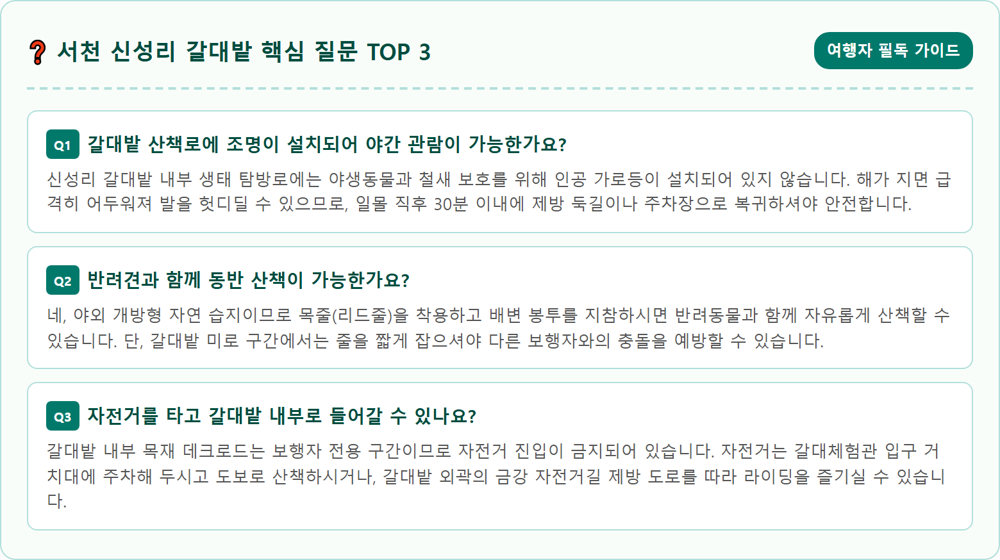

Cinematic eye-level landscape photograph of the vast Sinseong-ri reed field in Seocheon, South Korea during late autumn sunset. Golden and silvery reed plumes taller than a person sway gently in the breeze alongside the calm Geumgang River. A winding wooden boardwalk path cuts through the endless golden sea of reeds toward a scenic river overlook. Dramatic warm orange and violet sunset reflection glowing across the river water, photorealistic, ultra-high resolution, 8k, serene melancholic late autumn mood, rich textures, 1:1 aspect ratio.




